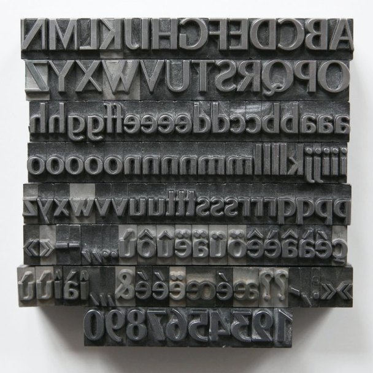

Термин

шрифтовая касса, кассовый состав
character set, glyph set
Полный комплект глифов, входящих в состав шрифта. Касса шрифта включает буквы, цифры, знаки препинания, специальные символы, альтернативные глифы, лигатуры, капитель, различные виды цифр, декоративные элементы и другие знаки, предусмотренные шрифтом.
Исторически кассой называли ящик с отделениями для хранения литер. Позже этим словом стали обозначать набор знаков шрифта, а в цифровой типографике — набор глифов шрифта.
Роже Экскоффон (Roger Excoffon), словолитня «Fonderie Olive» / Дэвид Пирсон (David Pearson), набор металлических литер шрифта «Chambord Maigre» для книги Оливера Джефферса «The Fate of Fausto», Франция / Великобритания, 2019